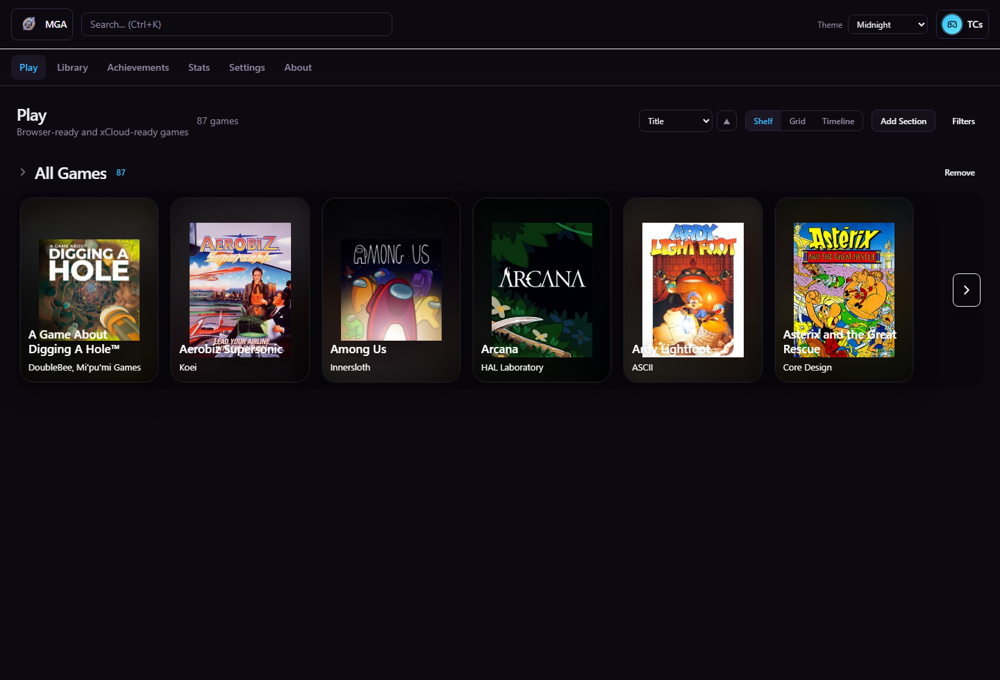
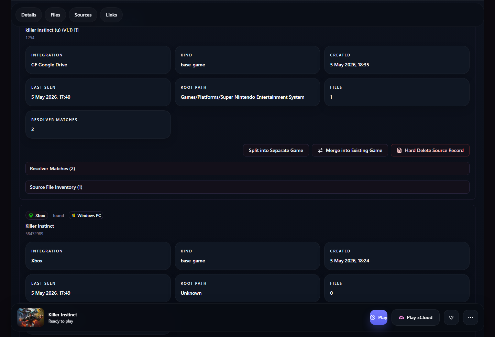
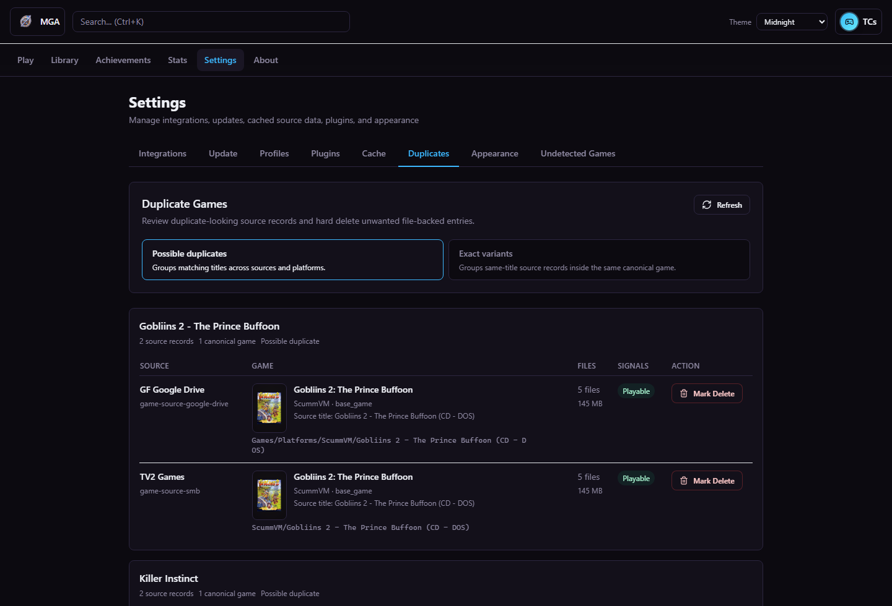
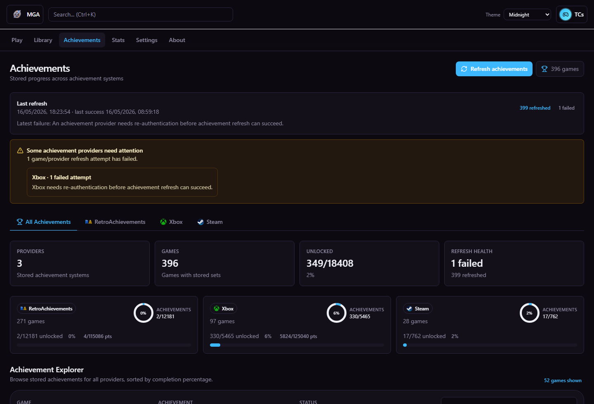

Profiles and first run
Current builds include a first-run Admin Player setup, a browser-local profile picker, and a header profile menu for switching or logging out.
Screenshot proof
The goal is not just to show that MGA has a UI. The goal is to prove that MGA solves the hard identity and provenance problem for fragmented collections.







Current builds include a first-run Admin Player setup, a browser-local profile picker, and a header profile menu for switching or logging out.
Settings exposes update status, check, download, and apply actions; installer builds support for-me-only process installs and all-users service installs while keeping mutable data outside Program Files.
Settings -> Cache shows asynchronous media download status plus retry and clear-cache controls for local artwork/video files.
Packed Windows installer names with strong DLC/add-on signals are archived as add-on content so level packs and character packs do not clutter the active review queue.